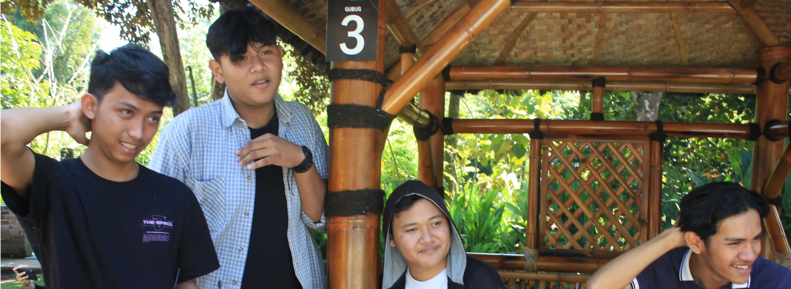
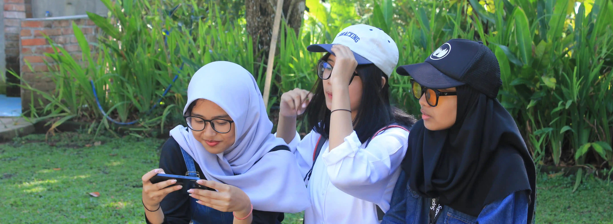
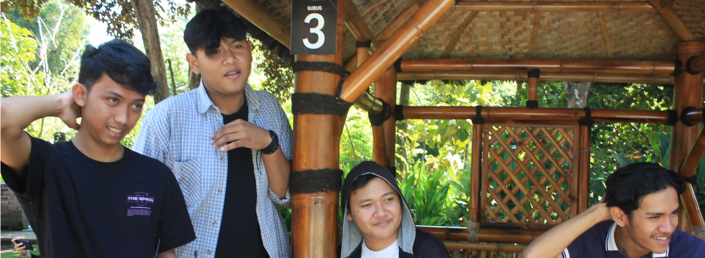
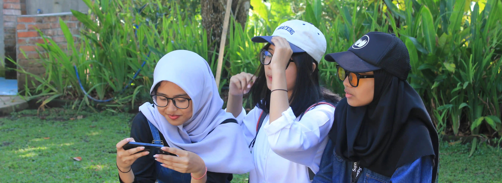
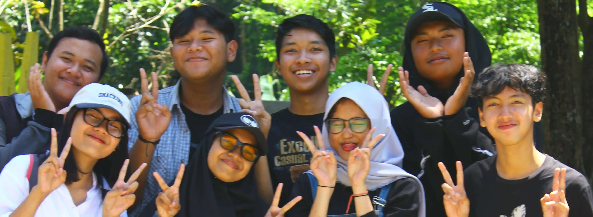
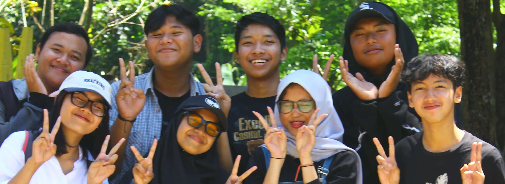

Dengan ini kami Persembahkan
Sejalah Perjalanan MM3
Sangat menyenangkan sekaligus manambah ilmu atas perjalanan
bersama ini kawan kawan.
Gallery
Laman ini kami persembahkan untuk sebagai kenang - kenangan kelak nanti saat sudah dewasa dan memiliki hidup masing - masing semoga saja website ini tetap ada untuk jadi kenangan kami. Dengan adanya laman ini diharapkan teman teman ingin melihat kenangan saat masih muda atau saat masih sekolah, barangkali saja hal ini dapat membantu hal tersebut.
Event Tour to Museum Panji V1
 



 



Ini website kelas, kepo Instagram kita ? kunjungi link ini